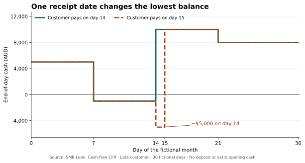

When one more day adds A$4,000 to a cash gap
A fictional business starts with A$5,000 and finishes the month with A$8,000. If its customer pays on day 14, the largest shortfall is A$1,000. If the same payment arrives on day 15, the shortfall reaches A$5,000. The difference is the A$4,000 staff payment due on day 14.

The dates behind the difference
Materials cost A$6,000 on day 7, so both calendars first fall below zero that day. Another A$4,000 leaves on day 14, followed by A$2,000 on day 21. The model nets all movements on the same day. A day-14 receipt covers the staff payment by the end of that day. A day-15 receipt leaves it uncovered overnight. A negative balance measures the cash missing if all scheduled payments are to go through.
Try both settings in the game. Predict the lowest balance before revealing the curve. Receipt on day 14 · Receipt on day 15.
Where the calendar changes the answer
We tested every receipt delay from zero to 21 days and every whole-percentage deposit from 0% to 50% on each of the three game calendars. An agreed deposit arrives on day 1 and reduces the later receipt by the same amount. The table groups dates with the same lowest balance and threshold. All 3,366 settings start with zero extra opening cash.
| Fictional business | Scheduled day of final receipt | Lowest cash with no deposit | Smallest tested deposit |
|---|---|---|---|
| Late customer | 10–14 | −A$1,000 | 7% of A$15,000 |
| Late customer | 15–21 | −A$5,000 | 34% of A$15,000 |
| Late customer | 22–31 | −A$7,000 | 47% of A$15,000 |
| Growing order | 28–49 | −A$9,000 | 45% of A$20,000 |
| Lumpy costs | 24–45 | −A$6,000 | Even 50% of A$10,000 leaves A$1,000 uncovered. |
The growing order reaches its lowest balance on day 15, before any tested final payment date. Moving that receipt further out leaves the minimum unchanged. In the lumpy-costs calendar, the A$6,000 gap on day 7 is already larger than the maximum A$5,000 deposit. The binding constraint in that case is the amount available early.
Dates after day 30 fall outside the exercise. For the late customer with no deposit, moving the receipt from day 30 to day 31 changes closing cash from A$8,000 to −A$7,000. The A$15,000 is still scheduled for collection. See all 66 scenario-and-delay results, including amounts outstanding on day 30. Download the results.
How this relates to Australian payment data
SMB Loan’s July 2026 Slow Payer Index reports a manufacturing median of 31.8 days and a construction median of 30.3 days. The measure is the median across reporting entities of each entity’s reported average payment time. Measuring lateness would also require the agreed due date. The July release preserves the sector summary. Its underlying filing selection cannot be independently reconstructed from that summary alone. Industry data and methodology.
Those observations describe reporting buyers. The teaching calendars use separately invented dates to explore a supplier’s daily cash. For a different calculation, SMB Loan’s working-capital model estimates the value of a given number of days of expenses from annual turnover and an expense ratio. Working-capital model and assumptions.
Use the exercise or reproduce the figures
For a 15-minute lesson, hand out the first page and keep the second as the answer key. Printable learner and facilitator sheets · Offline game kit.
Each of the 3,366 settings was checked for all 31 daily balances against a separate calculation that totals receipts and payments scheduled up to each date. Reproduce the CSV with Node.js by placing the calculation script and the game engine in one folder and running node timing-study.mjs. The three input calendars are also available as structured data.
These thresholds apply to the specified schedules. The model omits intraday sequencing, tax calculations, financing costs, other obligations and changes in customer behaviour. Whether a customer agrees to a deposit is a separate commercial question. No probability or recommended reserve can be inferred from the number of tested settings.